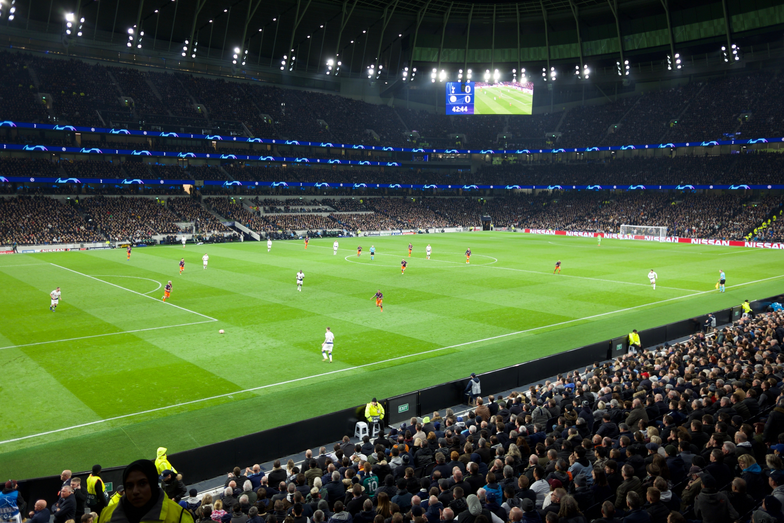

This is a picture of Tottenham stadium.

I can remember that this game was Quarterfinal of Champions League.
I can remember a result that was victory of Tottenham thanks to Son's goal.
And return game was helding on Mancity stadium. Interestingly due to Son's multi goal and Yollente's goal Tottenham enter Semifinal of Champions League.